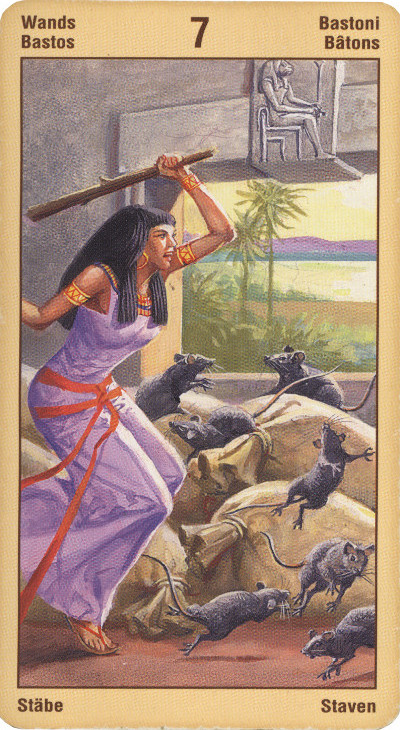

Семёрка Жезлов
Препятствия нередко появляются в нашей жизни для того, чтобы бросить нам вызов, чтобы помочь нам обрести внутреннюю силу и дать нам возможность чему-то научиться и приобрести жизненный опыт.
Не исключено, что вы вовлечены не столько во внешний, сколько во внутренний конфликт.
Семерка Жезлов означает, что мы подверглись нападению, что против нас выступают конкуренты, завистники или иные противники, причем они сильнее нас или их больше. Тем не менее, эта карта показывает, что шансы на победу у нас хорошие, потому что мы находимся в более выгодном положении. Поэтому её следует воспринимать как предупреждение: будь ловок и бдителен, чтобы не утратить своего позиционного преимущества.
И человек смело поворачивается лицом к брошенному ему вызову. Он стремится выйти за пределы совершенства шестерки жезлов. Он имеет мужество последовать своему импульсу и действовать, выкладываясь на все "сто".
Малое колебание, небольшое предательство самого себя и своих убеждений - верное поражение.
В прямом положении семерка жезлов символизирует творчество, вдохновение, искусство, привлекательность, достижение личных целей. Это карта победы, символизирующая движение вперед. Эта карта - как бы зеленый свет светофора. В ней сильно влияние Весов. Энергия, предприимчивость направляются на всевозможные проекты, связанные с творчеством, с организацией зрелищ, шоу-бизнесом. Вместе с тем, эта карта может служить указанием оценки, которой ваше умение и ваше искусство могут быть подвергнуты.
Появление этой карты в вашем раскладе - тревожный признак. Семерка Посохов обычно символизирует начало в жизни того этапа, который принято называть переходным. Соответственно, вы должны заранее настроиться на то, что многие из ваших планов вскоре придется спешно корректировать, а некоторые просто «выбросить за ненадобностью».
Недаром существует старинное китайское проклятье: «Чтоб тебе жить во времена перемен!» Ваша жизнь входит сейчас в такое «время перемен», и пока еще совершенно неясно, когда же ваше существование вновь примет законченные и стабильные формы.
Пусть вас утешает мысль о том, что эти перемены внесут много интересного в вашу жизнь.
Постарайтесь понять: смена одного жизненного этапа другим - процесс достаточно болезненный, но он всегда ведет к общему улучшению вашего положения. Соберитесь с силами и пройдите до конца через все испытания, которые готовит судьба: в итоге будете несказанно благодарны ей за то, что сейчас представляется вам ненужным и неприятным!
В перевернутом виде прогноз скорее отрицательный (враги вылезут из ямы и побьют).
Не исключено, что вы столкнулись с неодобрением и порицанием со стороны других людей относительно того, что вы сделали.
В перевернутом положении карта может также символизировать и отсутствие вдохновения, и энергию, растраченную попусту, и таланты, которые используются ненадлежащим образом, и просто неудачи.
Беспокойство, смущение, нерешительность, колебания, приводящие к денежным потерям.